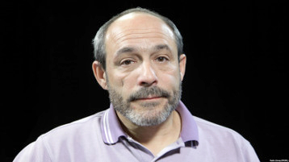

НЕТ НИЧЕГО ХУЖЕ ПЛОХОЙ ПОГОДЫ
Серж Саргсян ошибся в главном – в математике. Лидеры в Армении больше десяти лет не держатся, как ни крути. Левон Тер-Петросян, возглавив митинг и став лидером, был свергнут в 1998-м. Роберт Кочарян, сменивший его, ушел вроде как по-честному в 2008-м, но очень хотел вернуться – не получилось. Серж Саргсян решил обмануть судьбу, историю и площадь, пересев в кресло премьера. Не прошло.
Это не армянская история. Это история про всех нас, нужно просто правильно ее с армянского перевести.
Никол Пашинян, имя которого еще неделю назад произносили с улыбкой, продолжал оборачиваться то Лениным, то Кастро, то Валенсой, то Лимоновым-Яшиным, разрывая колючей проволокой руки в кровь и срывая голос в гандистских кликах. Но он не был даже Раффи Ованисяном пятилетней давности, который, по крайней мере, был избавлен от необходимости объяснять, почему вступил под свет юпитеров здесь и сейчас: у него, как он объяснял, украли на выборах победу, поэтому цвет времени оранжевый, все за мной. Никол Пашинян не акцентировал внимания на вопросе, где он был сразу после выборов, по результатам которых Саргсян и получил возможность все сегодняшнее сравнительно честно провернуть. А сам Пашинян в коалиции с еще двумя партиями получил целых 7%, и то во многом из-за того, что либеральный избиратель остался на тех выборах без Левона Тер-Петросяна. В эти детали Пашинян тоже не вдавался. И правильно делал.
Серж Саргсян упрекнул Пашиняна в том, что он не извлек уроков из событий 1 марта 2008 года, когда погибли люди при разгоне митинга Тер-Петросяна. Помимо того, что эта фраза еще более разозлила многих протестантов, она вообще не по делу. Именно уроки несостоявшейся революции десятилетней давности, в которой Пашинян работал главным трибуном, он, судя по всему, и извлек. Тер-Петросян тогда всех изрядно удивил, удержав двухсоттысячную площадь от короткой прогулки до президентского дворца, в которой власть уже, казалось, бесхозно ждала его. Удержал, возможно, именно потому, что речь шла о настоящей революции со сменой курса и страны, а Тер-Петросян знал: как ты эту власть, перейдя проспект, возьмешь, так и отдашь, а это обидно.
Никол Пашинян видел, как рушатся надежды площади. И теперь, какие бы вопросы ему совершенно по делу ни задавали, он войдет в историю как один из лучших технологов уличного действа своего времени. Его уроки будут учить будущие поколения городских герильяс. Он оказался круче даже Пучдемона, который, как и Пашинян, придя в политику со смехотворной поддержкой, перевернул Каталонию с ног на голову. Потому что у Пучдемона хотя бы была идея, которую разыграл бы при желании любой политический выскочка средних дарований и амбиций.
У Никола Пашиняна не было поначалу ничего. Ноль. Круглый, как площадь, и звонкий, как его голос на ней. Главу о его триумфе можно будет лирично назвать, например, «Как устроить всенародный бунт против плохой погоды?» Ведь как к плохой погоде, как извечному ходу светил, как к невозможности поселиться когда-нибудь в пятизвездочной гостинице в Монако, привыкли относиться армяне к своей нелюбви к любой власти, особенно если ее зовут Серж Саргсян. Он даже не тиран. Он просто – никакой. Десять лет он у власти, после десяти лет при власти, и если какие показатели и растут, то только эмиграции. Все, что он начинал, он без стеснения и смешно сворачивал, как примирение с Турцией и евроинтеграцию. Все, что он обещал, на поверку оказывалось анекдотом, как его обещание не становиться премьером, или негодованием директора птицефермы, у которого обнаружили недостачу – да еще и какую: карабахский фронт, для которого народ уговаривали 25 лет отдавать последнее, оказался скопищем дыр и провалов, что показало первое мало-мальское наступление противника.
Но на наших широтах кто-то относится к власти по-другому? Кто-нибудь чего-то недопонимает про свою вороватую и вечно провальную власть, но что делать, если так заповедано и если завтра война? Кто на этих прокисших дрожжах что-нибудь поднимет, как Пашинян? Болотная? Смешно. Кто еще? Минск на проводе? Астана?
Никол Пашинян, и только он (если вдруг не выяснится, что ему кто-то тайно помогал) подарил нам большое социальное исследование. Армения еще две недели назад не являла готовности к подвигу, способному поразить все постсоветье. Власть, причем не только армянская, за последние годы уверовала в свой небывалый успех: любой серьезный протест против нее может быть только неполитическим – дальнобойщики, белорусские «тунеядцы», тот же Электромайдан в Ереване, возможной «майданизации» которого опасались сами организаторы. Власть даже находила некоторое удовольствие от того, как тщетно, но упорно пытались освоить эти неполитизирванные мероприятия политизированные люди.
Сегодня у нас чистый эксперимент. Десятки тысяч людей вышли на улицу поддержать лидера полукомической политической силы с одним-единственным лозунгом: "Надоел!" Лозунг не бог весть какой политический сам по себе: уйди Саргсян раньше, возможно, площадь со сдержанным чувством победителя приветствовала бы уважительное слово к ней нового премьера, скажем, Карена Карапетяна, экс-топ-менеджера "Газпрома", который мог бы чувствовать себя победителем не меньшим. И ничего бы не изменилось по большой сути, и вся революция свелась бы к этому самому «надоел», что, конечно, тоже прекрасно.
Но власть обычно вовремя не уходит. Ей в общем-то все равно, что терять – будущее ее интересует только свое, поэтому она и в самом деле может играть до последнего, и играет. Едва ли армянская история станет прецедентной, у каждой столицы в наших местах своя площадь и свои привычки на нее выходить. Остался один вопрос. Тезис о тщетности массового протеста опровергнут, проблема только в том, что, не поверив в Пашиняна - а с чего бы ей, в самом деле в него верить, практически вся политическая Армения к победителю примкнуть не успела, и теперь он со своей победой остался один на один, что тоже логично. Все, что случилось, – успешное восстание, тот кто надоел, свергнут. Входит ли в технологии Пашиняна что-то большее, - большой вопрос. И уже не только армянский. Но власть обычно вовремя не уходит. Ей в общем-то все равно, что терять – будущее ее интересует только свое, поэтому она и в самом деле может играть до последнего, и играет. Едва ли армянская история станет прецедентной, у каждой столицы в наших местах своя площадь и свои привычки на нее выходить. Остался один вопрос. Тезис о тщетности массового протеста опровергнут, проблема только в том, что, не поверив в Пашиняна - а с чего бы ей, в самом деле в него верить, практически вся политическая Армения к победителю примкнуть не успела, и теперь он со своей победой остался один на один, что тоже логично. Все, что случилось, – успешное восстание, тот кто надоел, свергнут. Входит ли в технологии Пашиняна что-то большее, - большой вопрос. И уже не только армянский.
Вадим Дубнов
23-04-18
«Эхо Кавказа»
Это не армянская история. Это история про всех нас, нужно просто правильно ее с армянского перевести.
Никол Пашинян, имя которого еще неделю назад произносили с улыбкой, продолжал оборачиваться то Лениным, то Кастро, то Валенсой, то Лимоновым-Яшиным, разрывая колючей проволокой руки в кровь и срывая голос в гандистских кликах. Но он не был даже Раффи Ованисяном пятилетней давности, который, по крайней мере, был избавлен от необходимости объяснять, почему вступил под свет юпитеров здесь и сейчас: у него, как он объяснял, украли на выборах победу, поэтому цвет времени оранжевый, все за мной. Никол Пашинян не акцентировал внимания на вопросе, где он был сразу после выборов, по результатам которых Саргсян и получил возможность все сегодняшнее сравнительно честно провернуть. А сам Пашинян в коалиции с еще двумя партиями получил целых 7%, и то во многом из-за того, что либеральный избиратель остался на тех выборах без Левона Тер-Петросяна. В эти детали Пашинян тоже не вдавался. И правильно делал.
Серж Саргсян упрекнул Пашиняна в том, что он не извлек уроков из событий 1 марта 2008 года, когда погибли люди при разгоне митинга Тер-Петросяна. Помимо того, что эта фраза еще более разозлила многих протестантов, она вообще не по делу. Именно уроки несостоявшейся революции десятилетней давности, в которой Пашинян работал главным трибуном, он, судя по всему, и извлек. Тер-Петросян тогда всех изрядно удивил, удержав двухсоттысячную площадь от короткой прогулки до президентского дворца, в которой власть уже, казалось, бесхозно ждала его. Удержал, возможно, именно потому, что речь шла о настоящей революции со сменой курса и страны, а Тер-Петросян знал: как ты эту власть, перейдя проспект, возьмешь, так и отдашь, а это обидно.
Никол Пашинян видел, как рушатся надежды площади. И теперь, какие бы вопросы ему совершенно по делу ни задавали, он войдет в историю как один из лучших технологов уличного действа своего времени. Его уроки будут учить будущие поколения городских герильяс. Он оказался круче даже Пучдемона, который, как и Пашинян, придя в политику со смехотворной поддержкой, перевернул Каталонию с ног на голову. Потому что у Пучдемона хотя бы была идея, которую разыграл бы при желании любой политический выскочка средних дарований и амбиций.
У Никола Пашиняна не было поначалу ничего. Ноль. Круглый, как площадь, и звонкий, как его голос на ней. Главу о его триумфе можно будет лирично назвать, например, «Как устроить всенародный бунт против плохой погоды?» Ведь как к плохой погоде, как извечному ходу светил, как к невозможности поселиться когда-нибудь в пятизвездочной гостинице в Монако, привыкли относиться армяне к своей нелюбви к любой власти, особенно если ее зовут Серж Саргсян. Он даже не тиран. Он просто – никакой. Десять лет он у власти, после десяти лет при власти, и если какие показатели и растут, то только эмиграции. Все, что он начинал, он без стеснения и смешно сворачивал, как примирение с Турцией и евроинтеграцию. Все, что он обещал, на поверку оказывалось анекдотом, как его обещание не становиться премьером, или негодованием директора птицефермы, у которого обнаружили недостачу – да еще и какую: карабахский фронт, для которого народ уговаривали 25 лет отдавать последнее, оказался скопищем дыр и провалов, что показало первое мало-мальское наступление противника.
Но на наших широтах кто-то относится к власти по-другому? Кто-нибудь чего-то недопонимает про свою вороватую и вечно провальную власть, но что делать, если так заповедано и если завтра война? Кто на этих прокисших дрожжах что-нибудь поднимет, как Пашинян? Болотная? Смешно. Кто еще? Минск на проводе? Астана?
Никол Пашинян, и только он (если вдруг не выяснится, что ему кто-то тайно помогал) подарил нам большое социальное исследование. Армения еще две недели назад не являла готовности к подвигу, способному поразить все постсоветье. Власть, причем не только армянская, за последние годы уверовала в свой небывалый успех: любой серьезный протест против нее может быть только неполитическим – дальнобойщики, белорусские «тунеядцы», тот же Электромайдан в Ереване, возможной «майданизации» которого опасались сами организаторы. Власть даже находила некоторое удовольствие от того, как тщетно, но упорно пытались освоить эти неполитизирванные мероприятия политизированные люди.
Сегодня у нас чистый эксперимент. Десятки тысяч людей вышли на улицу поддержать лидера полукомической политической силы с одним-единственным лозунгом: "Надоел!" Лозунг не бог весть какой политический сам по себе: уйди Саргсян раньше, возможно, площадь со сдержанным чувством победителя приветствовала бы уважительное слово к ней нового премьера, скажем, Карена Карапетяна, экс-топ-менеджера "Газпрома", который мог бы чувствовать себя победителем не меньшим. И ничего бы не изменилось по большой сути, и вся революция свелась бы к этому самому «надоел», что, конечно, тоже прекрасно.
Но власть обычно вовремя не уходит. Ей в общем-то все равно, что терять – будущее ее интересует только свое, поэтому она и в самом деле может играть до последнего, и играет. Едва ли армянская история станет прецедентной, у каждой столицы в наших местах своя площадь и свои привычки на нее выходить. Остался один вопрос. Тезис о тщетности массового протеста опровергнут, проблема только в том, что, не поверив в Пашиняна - а с чего бы ей, в самом деле в него верить, практически вся политическая Армения к победителю примкнуть не успела, и теперь он со своей победой остался один на один, что тоже логично. Все, что случилось, – успешное восстание, тот кто надоел, свергнут. Входит ли в технологии Пашиняна что-то большее, - большой вопрос. И уже не только армянский. Но власть обычно вовремя не уходит. Ей в общем-то все равно, что терять – будущее ее интересует только свое, поэтому она и в самом деле может играть до последнего, и играет. Едва ли армянская история станет прецедентной, у каждой столицы в наших местах своя площадь и свои привычки на нее выходить. Остался один вопрос. Тезис о тщетности массового протеста опровергнут, проблема только в том, что, не поверив в Пашиняна - а с чего бы ей, в самом деле в него верить, практически вся политическая Армения к победителю примкнуть не успела, и теперь он со своей победой остался один на один, что тоже логично. Все, что случилось, – успешное восстание, тот кто надоел, свергнут. Входит ли в технологии Пашиняна что-то большее, - большой вопрос. И уже не только армянский.
Вадим Дубнов
23-04-18
«Эхо Кавказа»
Кавказский Центр Миротворческих Инициатив

© Ассоциация Текали - info@southcaucasus.com